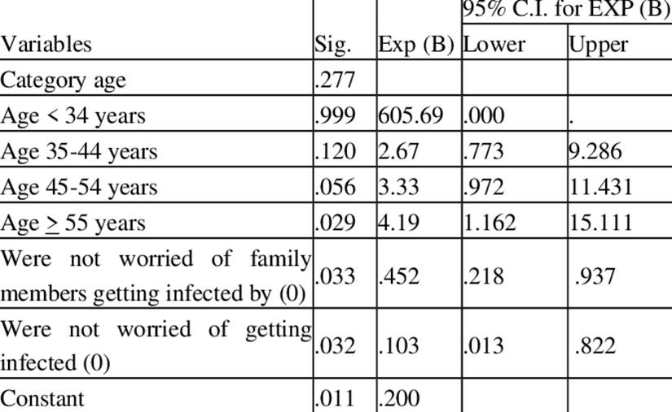
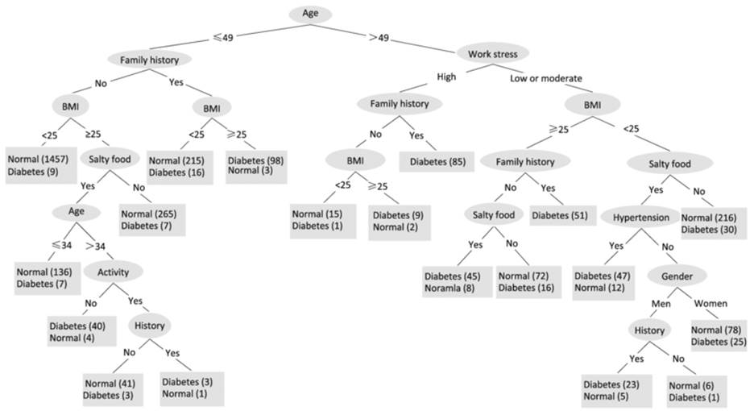

Chapter 9.2: Explainable models
Explainable models have inherent
attributes that explain the impact that each feature has as weights or by
creating a tree structure to explain the hierarchy of relationships amongst different
features. The most prominent explainable models are linear regression, logistic
regression, and decision trees.
Explainable models have inherent
attributes that explain the impact that each feature has as weights or by
creating a tree structure to explain the hierarchy of relationships amongst different
features. The most prominent explainable models are linear regression, logistic
regression, and decision trees.
9.2.1��� Linear
Regression
The linear regression models can
explain at an overall level, the importance of each feature through the beta coefficient.
Its functional form is Y =
0
+
1x1 + .. +
nxn
Y is the predicted value of the
dependent or outcome variable.
0 is a constant term,
1
is the weight of the first feature
x1 and
n
is the weight of the nth feature xn. If
features are standardized and on the same
scale, we can make comparisons amongst features to identify the most and least
impactful features. In addition to this, through adjusted R2, we can
ascertain to what extent the model is better than a simple horizontal line
through the mean value of the dependent variable.
By changing the value in each
feature, we can observe the impact on the prediction outcome. Predictions are
the sum product of weights and feature values. For numerical features, values
can be increased or decreased. Categorical features can be represented as
binary encoded 1 or 0 dummy features and the effect of their presence or
absence can be compared with the model outcome. Modeling fashion clothing involvement
[1] as the outcome, we can make inferences from table 9.2.1.

Table 9.2.1 Regression output for
fashion clothing involvement
Although the model didn't explain
all the variance in the data as evident from a low R square, it did however
indicate that normative behavior is the biggest predictor of fashion clothing
involvement. Normative influences are defined as the degree to which people
conform to the expectations of society. Apart from this, age is negatively
associated with fashion clothing involvement. Young people tend to be more
involved in fashion clothing than those who are old. To a certain extent,
married people are more fashionable than those who are unmarried.
9.2.2��� Logistic
Regression
The logistic regression follows the
sigmoid function, which takes values between 0 and 1. 1 is the desired outcome.
In total, the odds of events happening and not happening is 1. The cut-off is
0.5, this is otherwise known as the decision boundary.
Its functional form is
Where
�is a linear regression function and is equal
to
0
+
1x1 + .. +
nxn
Predictions are probability values.
For numerical features, values can be increased or decreased. Categorical
features can be represented as binary encoded 1 or 0 dummy features. The effect
of change in numerical and categorical dummy binary features on the outcome
variable can be observed through the change in the position of the predicted
outcome for the decision boundary.
For example, if for the baseline
case the predicted outcome is 0.4 and after changing the value in features
predicted outcome is 0.55, we can infer that the predicted class has changed
from 0 to 1. For the value 0.4, as per the decision boundary of 0.5, it will be
reduced to 0 as the outcome and for the predicted value of 0.55, it will be
changed to 1.
The coefficients returned by
logistic regression for each feature are the log of odds. Mathematically, it
can be represented as a log (probability
of event / (1-probability of the event)). Before interpreting the
coefficients of the logistic regression beta coefficient, we need to convert
the log of odds into the interpretable format. This can be done by first
converting the log into the exponential form using the formula odd =
exponential (original form log of odd). Finally, by doing odds/(1 + odds), we can
compare the coefficients of each feature if they are all standardized.
We can analyze the psychological
impact of COVID-19 among primary healthcare workers through logistic regression
from the below logistic regression output [2]. Table 9.2.2 has
output from the logistic regression model.

Table 9.2.2 Regression output for
psychological impact of COVID-19 among primary healthcare workers
Older healthcare workers "55
years or older" were four times more vulnerable to depression than younger
workers. Healthcare workers who were neither worried for themselves nor for
their families were found to be less likely to have depression disorder in
comparison to those who worried for themselves and their families.
In the case of text classification,
we can obtain logistic regression weights for each corresponding word feature.
This will help us explain the relative importance of each word.
9.2.3��� Decision
Tree
The decision trees can be trained to
identify different classes for a classification problem. It can also be trained
for a regression problem. Training the decision tree is otherwise called
growing a decision tree. It is performed through a splitting process. Adding a
section to a tree is called grafting whereas cutting a tree or its node is
called pruning. The dependent variable is split with the help of independent
variables at nodes with the most optimal value into branches based on the best
split. The best split is decided based on either of the methods such as the
Gini index, information gain, or chi-square.
CART (Classification and Regression
Trees) uses Gini as the method to evaluate split into data. For a pure
population, the score is 0. This is most useful in noisy data. If the dependent
variable has n number of classes, for each feature, the Gini impurity is
calculated and the one with the lowest impurity is chosen. In the case of
information gain or entropy, after calculating the information gain for each
feature, the one with the highest is selected for the node splitting.
For numerical features, exclusion
points are selected and values less than and higher than the exclusion point
are encoded as ordinal levels. This makes the feature binary. Through n
possible exclusion points, the one which gives maximum information gain or
minimum Gini impurity is selected.
A study for potential diabetes
mellitus created a decision tree to model potential risk for diabetes based on
diet, lifestyle, and past family history of diabetes [3]. Figure
9.2.3 has the decision tree diagram.

Figure 9.2.3 Potential risk for diabetes
using decision tree
If we traverse from top to bottom of
the decision tree across 'nodes', data is automatically filtered as a subset
based on the 'and' condition. For example, let's traverse the right edge of the
tree as Age(>40) -> Work Stress(High) -> Family History(Yes) ->
Diabetes(85). The node and edges can be translated as people with age above 40
and who also have high work stress and family history of other family members
having been diagnosed with diabetes, it is certain that the person will have
diabetes. All the 85 observations falling under this group are diagnosed with
diabetes.
We can scale the Gini index or
entropy at each node so that it adds to 100. It can help us compare between
different subsets of data created with decision tree "AND" rules. We
can narrow down to identify the most and least impactful subsets of data and
rules affecting the dependent variable.